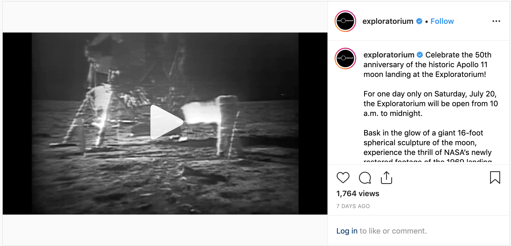
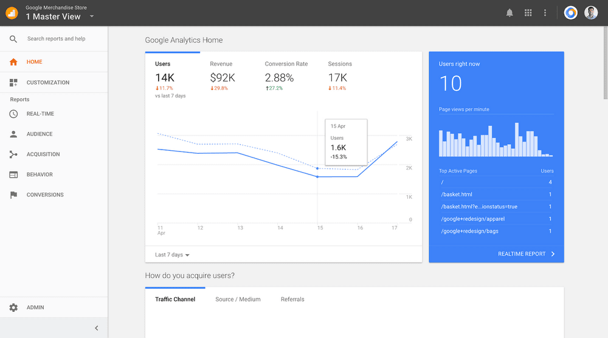

Exploratorium
Digital Marketing Intern, Summer 2019
www.exploratorium.edu
Overview
I got to spend my summer barting to SF to work here at the Exploratorium as a Digital Marketing Intern! I focused primarily on analytics-based digital marketing, looking at multi-channel and web analytics to make data-based decisions and suggestions for the social media channels. I also expressed an interest in UX, so I was able to work on some UX based projects, such as doing multiple Competitive Analyses of other museum / non-museum websites and analyzing web analytics for user trends and goals.
Methods, Tools
Google Analytics, Social Media Analytics (Hootsuite, Later, etc.), Audits, Competitive Analysis, User Flow and Journey, Usability Testing
Social Media Analytics + Audits
In order to review and revise the current social media methods used, an audit needed to be done for our current main channels. Thus, we could review what was working, what was failing, and what could be improved upon across the social media channels in order to increase engagement.
All data for the month-wide audits I conducted were gathered through social media analytics sites (Later, Twitter Analytics, FB Analytics, Pinterest Analytics, etc.) where metrics such as engagement, audience, branding, and content (UGC, video, etc.) were noted and used for overall analysis. With all accounts taken, I was able to make data-based decisions to determine and present what was working, needed to be pushed further, and could be modified for an increase in channel impressions + engagements.
Campaign-Based Digital Content Creation
Another aspect of Digital Marketing I was able to take on related to Social Media content creation. After researching Social Media best practices to utilize, as well as each social media channel's individual style + most engaged content type, I captured the Exploratorium voice to create written and digital content to promote upcoming events (#MoonMonth, AfterDark). Below: Instagram post to promote #MoonMonth highlighting the historic Apollo 11.

Competitive Analysis
I aided in the redesigns of various Exploratorium pages (Membership, Gift, 404, etc) by researching and analyzing competitor sites for each page—gathering screenshots, links, and detailed analysis into a written report while keeping in mind the user goal. This way, before initiating other parts of the user research process, we could understand how competing organizations marketed their ideas and products online, and gather actionable insights and recommend changes to the Exploratorium sites.
Web Analytics
I really got to get my hands on Google Analytics this summer; it's such a powerful tool that has so much to it in informing analysts, designers, developers, and stakeholders on how to better enhance performance on a site! To start the user research for page redesigns, I was assigned to pull data from Google Analytics in order to generate reports about how users were meeting goals, page use, and overall workings of the site.
One key insight from Google Analytics that we were able to track were user journeys + behavior across the website (with data such as the exit rate, pageviews, entrances, bounce rate; flow charts such as behavior flow, user flow, goal flow). By looking at these charts and metrics, we could see whether users were meeting user goals, interacting with the site smoothly, or instead, were encountering potential pain points.

Learnings
So glad to have been able to spend my first summer internship here! I was encouraged to speak up about fields I was interested in, actively take part in projects across departments, pick up tools for the first time and really get to know them (Google Analytics, Social Media Analytics, etc) and just wholeheartedly learn.
Many Thanks
If they ever see this — I want to thank Sewon (especially), Crystal, Geoff, Sarah, and all the other wonderful & fun interns and staff I met along the way!